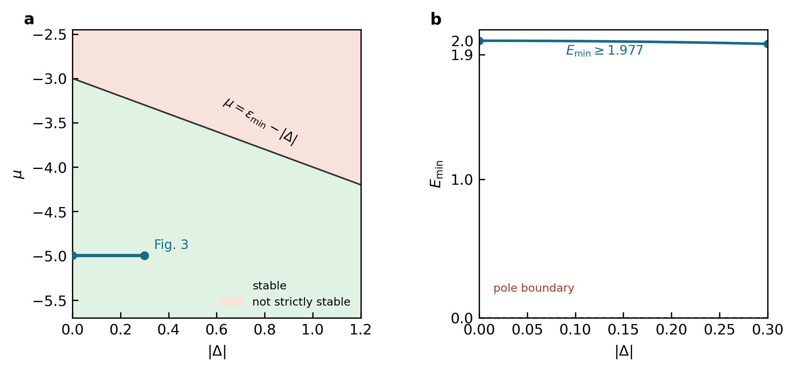
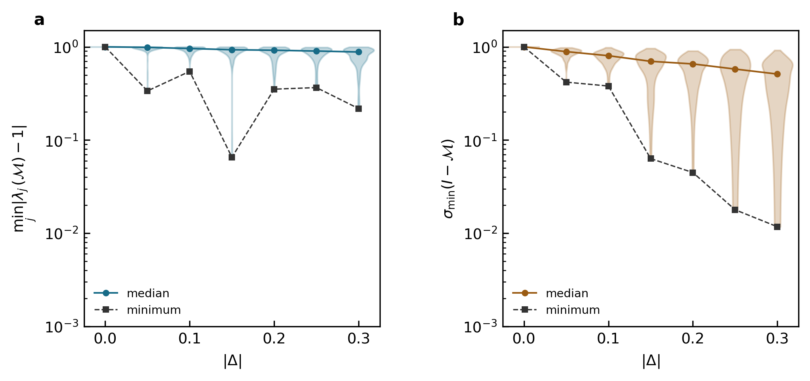

稳定配对传播与 \(U_2\) 辅助场的逐构型无极点证明
本报告回答一个具体问题：当无相互作用的配对哈密顿量本身物理稳定，而唯一的辅助场来自 \(U_2(\hat n_b-\hat n_c)^2\) 时，任意实辅助场构型是否都不可能使 Nambu 传播矩阵碰到玻色极点？
结论：可以严格证明，而且结论比“采样时大概遇不到”更强。
对任意有限格点数、任意有限 Trotter 时间片数，只要完整的自由配对哈密顿量严格稳定， 并且所有辅助场因子都是 \(U_2\) 产生的相位旋转，完整 Nambu 传播矩阵就是一个严格的 \(\eta\)-收缩。严格收缩矩阵不可能有模等于 \(1\) 的本征值，特别不可能有本征值 \(1\)。 因而 \(\det[I-\mathcal M(\varphi)]\neq0\)，构型空间中不存在极点。
进一步地，因为实辅助场只通过单位复数相位进入传播矩阵，有限构型空间等价于一个紧致的相位空间。 连续函数 \(\sigma_{\min}[I-\mathcal M(\varphi)]\) 因此具有严格正的全局最小值。 所以 Green 函数以及由有限个 Green 函数相乘得到的观测量，不会产生由行列式极点引起的无限方差长尾。
必须修正一句容易产生歧义的话。
有 pairing 时，“裸单粒子最低能级高于化学势” \(\epsilon_{\min}>\mu\) 本身还不够。本文均匀格点内配对的正确严格条件是 \(\epsilon_{\min}-\mu>|\Delta|\)，等价于完整二次哈密顿量的最低 Bogoliubov 激发能严格大于零。 报告后面会给出一个反例，说明为什么不能漏掉 \(|\Delta|\)。
1. 先把问题中的对象逐一说清
1.1 自由配对部分
把化学势放进无相互作用部分后，文章模型的二次哈密顿量可以写成
\(A_\triangle\) 是三角格最近邻矩阵。这里 \(\hat K_0=\hat H_0-\mu\hat N\) 才是进入 grand-canonical 虚时间传播的对象。配对强度的整体相位可以通过对其中一种玻色子做全局相位变换移走，因此稳定性只依赖 \(|\Delta|\)。
1.2 \(U_2\) 辅助场
在一个格点、一个时间片上，排斥的相对密度相互作用采用
所以固定辅助场后的 \(U_2\) 因子没有改变任何玻色占据数基矢的振幅，只给不同粒子数态乘上相位。 把一个时间片所有格点合并起来，记
1.3 什么叫“极点”
对整个虚时间周期，把 Nambu 单体传播矩阵记为 \(\mathcal M(\varphi)\)。文章中的固定构型权重和 Green 函数分别是
因此以下三句话完全等价：
- \(\mathcal M(\varphi)\) 有一个本征值等于 \(1\)；
- \(\det[I-\mathcal M(\varphi)]=0\)；
- 权重分母和 Green 函数同时奇异。
本报告所说的“无极点”，就是证明第二条对每一个实辅助场构型都不发生。
2. 第一步：把物理稳定条件完整推出来
2.1 先对角化普通单粒子部分
因为本文 benchmark 的跃迁矩阵为实数，\(h\) 是实对称矩阵。取正交矩阵 \(O\)，使
同时对 \(b,c\) 两种玻色子做相同变换，
由于 \(O^{\mathsf T}O=I\)，格点内配对在新基底中仍然逐模配对：
因此 \(\hat K_0\) 分解成彼此独立的双模问题：
2.2 对每个双模问题做配对变换
定义新的玻色算符 \(\hat\alpha_\nu,\hat\beta_\nu\)：
因为 \(u_\nu^2-v_\nu^2=1\)，新算符仍满足标准玻色对易关系。下面把代数中最关键的两项明确展开：
令异常项 \(\hat\alpha^+\hat\beta^++\hat\alpha\hat\beta\) 的系数为零，得到
右边必须严格小于 \(1\)，所以需要 \(\xi_\nu>|\Delta|\)。在这个条件下代回去，双模哈密顿量成为
\(E_\nu\) 就是该空间模的准粒子激发能。所有模都稳定的条件因此是
2.3 为什么只写 \(\epsilon_{\min}>\mu\) 不够
取一个单模例子：\(\epsilon=0,\ \mu=-0.1,\ |\Delta|=0.2\)。虽然 \(\epsilon>\mu\)，但 \(\xi=\epsilon-\mu=0.1<|\Delta|\)。在双模压缩真空中增大参数 \(r\)，能量期望值为
这说明裸能级高于化学势仍可能被 pairing 压垮。若 \(\xi=|\Delta|\)，最低激发能恰为零，热占据数求和也会发散。 因此定理必须使用严格的完整配对稳定条件。
Fig. 3 参数位于稳定区深处

benchmark 与稳定边界之间不是数值舍入量级的微小距离。即使在最大 pairing \(|\Delta|=0.30\) 处，正常能量差仍为 \(2\)，最低配对激发能约为 \(1.977\)。
3. 把“物理稳定”翻译成一个 Nambu 矩阵不等式
3.1 \(\eta\) 只负责区分粒子分量和空穴分量
从本节开始，矩阵或普通向量右上角的 \(+\) 表示厄米共轭；写在玻色算符上的 \(+\) 仍表示产生算符。
先把 \(b,c\) 两种玻色子在所有格点的湮灭算符排成一列 \(\hat{\boldsymbol a}\)，再组成 \((\hat{\boldsymbol a},\hat{\boldsymbol a}^+)^{\mathsf T}\)。若湮灭算符一共有 \(N\) 个，定义
上半部分是粒子分量，下半部分是空穴分量，所以 \(\eta\) 给二者相反的符号。 它不是文章中表示玻色对易关系的 \(\Omega\)，两者用途不同。
按照文章的 Nambu 约定，一个一般的二次生成元写成
左乘 \(\eta\) 以后，下半块的符号翻转：
物理二次哈密顿量是厄米的，意味着 \(K^+=K\)，而产生一对玻色子的系数与湮灭一对玻色子的系数互为复共轭， 即 \(\overline{\Delta'}=\Delta^+\)。因此 \(\eta A\) 的两个对角块各自厄米，两个非对角块互为厄米共轭， 从而 \((\eta A)^+=\eta A\)。反过来，\(\eta A\) 厄米也逐块给出这些关系，所以它与二次部分的厄米性等价。 不影响单体传播的实常数没有写进 \(A\)。
3.2 严格正定正是这里需要的物理稳定条件
对任意非零 Nambu 振幅 \(x\)，若
那么自由配对哈密顿量沿每一个玻色振幅方向增加能量，没有负能方向，也没有零能方向。 这就是本报告使用的“严格物理稳定”。只要求 \(\eta A\ge0\) 仍可能留下零模，而零模的虚时传播本征值正好是 \(1\)， 所以半正定不足以排除极点。
对本文均匀格点内配对，可在第 2 节的每个空间本征模中直接检查这个条件。 将基底重排以后，\(\eta A\) 分成两个相同的 \(2\times2\) 厄米块：
它的本征值由
给出，即 \(\epsilon_\nu-\mu\pm|\Delta|\)。两者都为正，当且仅当
对所有空间模同时成立，就得到第 2 节的条件 \(\epsilon_{\min}-\mu>|\Delta|\)。因此合作者所说的 \(\eta A>0\) 在本文模型中确实就是完整的配对稳定条件。
3.3 单个自由传播为什么没有单位圆本征值
这一点可以先单独验证。因为 \(\eta A>0\)，它有正定平方根。矩阵 \(A\) 与下面的厄米矩阵相似：
方括号中的矩阵等于自己的厄米共轭，所以本征值全为实数；它还是可逆的，因为 \(\eta A>0\) 和 \(\eta^2=I\)。 相似矩阵有相同本征值，因此 \(A\) 的本征值全为非零实数。于是 \(\exp(-tA)\) 的本征值都是 \(\exp(-t\varepsilon)\)，其模不可能等于 \(1\)。 \(\exp(tA)\) 当然也没有单位圆本征值，但它是反向的膨胀传播；物理虚时间使用的是 \(\exp(-tA)\)。
这里有一个容易混淆的负号。
上面的 \(A\) 表示物理自由哈密顿量的 Nambu 动力学矩阵，虚时间因子是 \(\exp(-tA)\)。 文章则把每个指数中的完整矩阵直接记为 \(A_\ell\)，所以自由部分是 \(A_\ell^{(0)}=-\Delta\tau A\)。换用文章的记号后，半群生成条件写成 \(\eta A_\ell^{(0)}+(A_\ell^{(0)})^+\eta<0\)。两种写法是同一个条件。
上述本征值论证只处理一个自由因子。实际构型包含许多彼此不对易的自由因子和辅助场因子，不能把各因子的本征值直接相乘。 下一节先证明 \(U_2\) 因子保持 \(\eta\)，第 5 节再利用半群闭合性处理完整乘积。
4. \(U_2\) 辅助场沿着 \(\eta\)-收缩区域的边界做相位旋转
一个时间片的 \(U_2\) 因子是
在湮灭算符部分，它的系数是实对角矩阵 \(\Theta_\ell=\operatorname{diag}(\theta_{1\ell},\ldots,\theta_{N_s\ell}, -\theta_{1\ell},\ldots,-\theta_{N_s\ell})\)。相应的 Nambu 指数生成元和相位传播矩阵为
左乘 \(\eta\) 得到
这就是合作者所说的“\(\eta B_\ell\) 反厄米”。它等价于 \(B_\ell^+\eta+\eta B_\ell=0\)。为了看清这个条件对指数矩阵意味着什么，令指数参数从 \(0\) 连续增加到 \(1\)：
在 \(s=0\) 时括号内是 \(\eta\)，所以在 \(s=1\) 时仍然是 \(\eta\)：
因此 \(U_2\) 因子不产生沿 \(\eta\) 度量的收缩或膨胀，只做相位旋转。 在单格点顺序 \((b,c,b^+,c^+)^{\mathsf T}\) 中，它就是
与文章和 production 实现中的 \(U_2\) 更新矩阵完全一致。
5. 核心证明：任意多时间片相乘后仍然严格收缩
半群语言在这里做的事情很具体：找出一个对矩阵乘法封闭的传播区域。 标准的定义可参见 Z.-C. Wei, Phys. Rev. B 110, 075146 (2024)； 下面把本文所需的每一步直接证明出来，不要求读者预先熟悉半群理论。
在生成元层面，收缩条件写成 \(\eta X+X^+\eta\le0\)。这个条件对非负倍数和相加保持成立， 所以满足它的生成元构成一个“锥”。本文的自由虚时生成元是 \(X=-A\)，因而 \(\eta X+X^+\eta=-2\eta A<0\)；\(U_2\) 生成元则满足等号 \(\eta B_\ell+B_\ell^+\eta=0\)。将这些生成元取指数并按虚时间顺序相乘，就得到下面的收缩半群。
我们把满足
的传播矩阵称为 \(\eta\)-收缩。这个不等式的意思是：对任意向量 \(x\)， \(x^+(M^+\eta M-\eta)x\le0\)。若对每个非零 \(x\) 都严格小于零，就称为严格 \(\eta\)-收缩。
5.1 稳定自由传播进入严格收缩区域
从 \(\eta A>0\) 出发，对自由虚时因子直接求导：
第二行用了 \((\eta A)^+=\eta A\)，所以 \(A^+\eta=\eta A\)。 对任何非零向量 \(x\)，\(\mathrm e^{-tA}x\) 仍然非零；再由 \(\eta A>0\)，可知右边夹在任意非零向量之间都严格为负。 从 \(t=0\) 积分到一个有限时间片 \(\Delta\tau>0\)，得到
所以每个自由时间片都是严格 \(\eta\)-收缩。
“收缩”不是说所有普通长度都变小。
一个稳定单模在准粒子 Nambu 基底中的自由传播是 \(\operatorname{diag}(\mathrm e^{-tE},\mathrm e^{tE})\)。粒子方向缩小，倒数配对的空穴方向增大， 这正是 Nambu 本征值成倒数对的表现。用 \(\eta=\operatorname{diag}(1,-1)\) 计算却得到
因此这里收缩的是带粒子、空穴相反符号的 \(\eta\) 度量，而不是普通欧氏长度。
5.2 插入任意 \(U_2\) 相位以后仍然严格收缩
第 4 节已经证明 \(P_\ell^+\eta P_\ell=\eta\)。把它放在自由因子右侧，直接得到
左右乘一个可逆矩阵不会改变括号内“对所有非零向量都严格为负”的性质。 若 Trotter 次序把相位因子放在自由因子左侧，同样有
所以证明不依赖自由传播与相位旋转的先后次序，也不要求二者对易。
5.3 为什么这类矩阵对连续相乘封闭
取两个已经满足收缩条件的矩阵 \(M_1,M_2\)。把乘积的收缩量拆开：
右边两项都小于等于零，所以乘积仍满足收缩条件。只要其中一个因子严格收缩，并且另一个因子可逆，右边就严格小于零。 所有矩阵指数都可逆，而每个时间片都含有严格收缩的自由因子。因此无论 \(U_2\) 场在空间和虚时间上怎样变化，完整乘积
始终满足
“满足收缩条件的矩阵相乘后仍满足同一条件”就是这里的半群性质；不需要再引入一个新的抽象集合符号。
5.4 严格收缩为什么排除整个单位圆
假设完整传播矩阵存在本征向量 \(v\ne0\) 和本征值 \(\lambda\)：
把这个向量代入严格收缩不等式，左边可以直接算成
严格收缩要求第一行严格小于零。若 \(|\lambda|=1\)，第二行却恰好等于零，无论 \(v^+\eta v\) 是正、负还是零，都会产生矛盾。因此
极点要求 \(\lambda=1\)，而 \(1\) 位于单位圆上，所以立即得到
半群证明到这里结束。
自由稳定性给出 \(\eta A>0\)，使每个自由虚时间片严格收缩；\(U_2\) 场满足 \(P_\ell^+\eta P_\ell=\eta\)，只做保持 \(\eta\) 的相位旋转；收缩条件对矩阵乘法封闭。 因此完整传播严格收缩，没有单位圆本征值，也就不可能碰到行列式极点。
6. 为什么还可以排除“无限接近极点”的统计长尾
上一节逐构型排除了精确极点。对有限格点数和有限时间片数，还能进一步排除一串构型越来越靠近极点。
虽然实辅助场 \(\varphi_{i\ell}\) 没有界，传播矩阵只通过下面的单位复数依赖它：
每个相位都在单位圆上。有限个格点和有限个时间片只给出有限个单位圆的直积，这是一个有界且包含其边界的相位空间。 完整传播矩阵是有限个矩阵的乘积，因而随这些相位连续变化； \(\sigma_{\min}[I-\mathcal M]\) 也连续。
第 5 节已经证明它在相位空间的每一点都严格大于零。连续正函数在这个有限相位空间上一定取得最小值，所以
Green 函数 \([I-\mathcal M]^{-1}\Omega\) 的最大放大倍数就是这个正数的倒数，因此在整个相位空间上一致有界。 由 Wick 定理写成有限个 Green 函数乘积的物理观测量也有界。若某个估计量另外显式包含有限次辅助场幂， 原始高斯权重 \(\exp(-\varphi^2/2)\) 的相应矩仍然有限。因此 Fig. 3 不会产生由行列式极点引起的无限方差长尾。
这个结论的范围。
上述正下界会依赖系统大小、逆温、自由能隙和时间片数。证明没有声称在热力学极限、零温极限或能隙闭合极限中仍有同一个统一下界。 它严格覆盖 Fig. 3 的有限 \(3\times3\) 格点、有限 \(\beta\) 和有限 \(\Delta\tau\) 计算。
7. 两个直观检查
7.1 单空间模的图像
若只有一个空间模，\(U_2\) 相位在重排后的 \((b,c^+)\) Nambu 子空间中是整体相位，因而与自由双模传播对易。 把所有时间片相位相加为 \(\Theta\)，一圈传播的两个本征值为
当 \(E>0\) 时，一个本征值的模严格小于 \(1\)，另一个严格大于 \(1\)，所以无论 \(\Theta\) 如何都不可能等于 \(1\)。 当 \(E=0\) 时，它们落到单位圆上，\(\Theta=0\pmod{2\pi}\) 就会命中极点。这正好显示严格正能隙的重要性。
多格点的空间不均匀相位不与格点间跃迁对易，因此不能把这个单模公式直接套到一般构型；第 5 节的 \(\eta\)-收缩半群证明才是一般证明。
7.2 独立 Nambu 矩阵抽查
为核对代码层面的矩阵约定，我独立构造了 \(3\times3\) 三角格的一对复共轭 Nambu 子空间中的一个：
使用 Fig. 3 的 \(U_2=1,\mu=-5,\beta=4,\Delta\tau=0.01\)，对每个 \(\Delta=0,0.05,\ldots,0.30\) 从原始 Hubbard--Stratonovich 高斯分布独立抽取 128 个完整相位历史，共 896 个构型。 脚本还逐个 \(\Delta\) 检查了 \(\eta A>0\)、自由时间片严格满足 \(\mathrm e^{-\Delta\tau A^+}\eta\mathrm e^{-\Delta\tau A}-\eta<0\)，以及随机 \(U_2\) 相位矩阵满足 \(P_\ell^+\eta P_\ell=\eta\)。

896 个随机构型均未接近机器零。全组最小本征值距离为 \(6.53\times10^{-2}\)， 全组最小奇异值为 \(1.17\times10^{-2}\)。随着 pairing 增大，矩阵的非正规性使最小奇异值下降， 但它在本次抽查中仍远离双精度舍入尺度。
这张图不是对连续构型空间的证明，因为有限随机点不可能覆盖所有相位；它只核对了本文矩阵约定、参数和严格证明的数值表现。
| \(|\Delta|\) | \(E_{\min}\) | samples | min \(\min_j|\lambda_j-1|\) | median \(\min_j|\lambda_j-1|\) | min \(\sigma_{\min}(I-\mathcal M)\) | median \(\sigma_{\min}(I-\mathcal M)\) |
|---|---|---|---|---|---|---|
| 0.00 | 2.000000 | 128 | 0.999956 | 0.999987 | 0.999949 | 0.999981 |
| 0.05 | 1.999375 | 128 | 0.336332 | 0.987883 | 0.418123 | 0.888901 |
| 0.10 | 1.997498 | 128 | 0.545501 | 0.959785 | 0.379793 | 0.803376 |
| 0.15 | 1.994367 | 128 | 0.065283 | 0.931370 | 0.063179 | 0.699406 |
| 0.20 | 1.989975 | 128 | 0.351433 | 0.919504 | 0.044758 | 0.655734 |
| 0.25 | 1.984313 | 128 | 0.365427 | 0.901639 | 0.017833 | 0.577511 |
| 0.30 | 1.977372 | 128 | 0.217504 | 0.881224 | 0.011727 | 0.510608 |
8. 这如何解释 Fig. 3 没有出现 pole / infinite variance
Fig. 3 同时满足本证明所需的全部条件：
- \(3\times3\) 三角格是有限系统，\(L_\tau=400\) 是有限时间片数；
- \(\epsilon_{\min}=-3,\mu=-5\)，所以 \(\epsilon_{\min}-\mu=2\)；
- \(|\Delta|\le0.30\)，故 \(E_{\min}\ge1.977>0\)；
- \(U_1=0\)，没有实指数的 total-density 辅助场；
- 唯一波动的 \(U_2\) 辅助场是单位模相位矩阵。
因此 Fig. 3 没有遇到 pole 并非只是一项经验观察，而是该参数和 Hubbard--Stratonovich 分解的结构性结果。 原 production 输出还记录了每个 \(\Delta\) 点 \(7.2\times10^8\) 次 \(U_2\) local proposals； local ratio 的平均相位绝对值处于 \(10^{-17}\) 到 \(10^{-15}\) 量级，branch-\(\pi\) 计数均为零。 这些是 sign/branch 诊断，不是严格的 pole-distance 测量，但与本证明和 benchmark 的平滑统计行为一致。
不要把结论错误推广到 \(U_1<0\) 的情形。
\(U_1\) 场产生 \(\exp[\alpha_1\phi(\hat n_b+\hat n_c)]\) 的实指数。 它的 Nambu 生成元不满足 \(B^+\eta+\eta B=0\)，因此不保持 \(\eta\)；当 \(|\phi|\) 很大时， 它还会任意放大某些方向。第 4、5 节的关键等式于是失效。本命题直接解释的是 Fig. 3 的 \(U_1=0\)、仅 \(U_2\) 波动情形；含 \(U_1\) 的一般模型需要另外证明逐构型收缩条件。
9. 可放入 Supplemental Material 的命题骨架
建议命题。 令 \(A\) 为有限模自由配对哈密顿量的 Nambu 动力学矩阵，并令 \(\eta=\operatorname{diag}(I_N,-I_N)\)。假设 \(\eta A>0\)。 每个 \(U_2\) 辅助场时间片的 Nambu 生成元记为 \(B_\ell\)，并满足 \(B_\ell^+\eta+\eta B_\ell=0\)。则对任意有限时间片数和任意实辅助场构型， 有序乘积 \(\mathcal M=\prod_\ell[\mathrm e^{-\Delta\tau A}\mathrm e^{B_\ell}]\) 满足 \(\mathcal M^+\eta\mathcal M-\eta<0\)。因此 \(\mathcal M\) 没有单位圆本征值，特别地 \(\det(I_{2N}-\mathcal M)\ne0\)。若辅助场只通过有限个单位相位进入 \(\mathcal M\)，则整个构型空间上还有 \(\inf\sigma_{\min}(I_{2N}-\mathcal M)>0\)。
证明骨架。 由 \(\eta A>0\) 及 \((\eta A)^+=\eta A\)，积分恒等式 \(\mathrm e^{-tA^+}\eta\mathrm e^{-tA}-\eta =-2\int_0^t\mathrm ds\,\mathrm e^{-sA^+}(\eta A)\mathrm e^{-sA}<0\) 证明自由因子严格收缩。由 \(B_\ell^+\eta+\eta B_\ell=0\)，有 \(\mathrm e^{B_\ell^+}\eta\mathrm e^{B_\ell}=\eta\)。恒等式 \((M_1M_2)^+\eta(M_1M_2)-\eta =M_2^+(M_1^+\eta M_1-\eta)M_2+(M_2^+\eta M_2-\eta)\) 随后证明任意有序乘积仍严格收缩。若 \(\mathcal Mv=\lambda v\) 且 \(|\lambda|=1\)， 则 \(v^+(\mathcal M^+\eta\mathcal M-\eta)v=0\)，与严格收缩矛盾。 最后，最小奇异值在有限相位空间上连续且处处为正，故其全局最小值严格为正。
如果将这段加入 SM，建议放在现有 “Infinite variance and determinant poles” 一节的 pole-free structures 部分， 紧接当前关于 number-conserving strict contraction 的讨论之后。它给出 paired Nambu 情形所需的 \(\eta\)-收缩判据， 并可在最后一句直接连接 Fig. 3。
10. 复现信息与文件索引
| 项目 | 内容 |
|---|---|
| 报告 | docs/research_reports/2026-07-19_u2_pole_free_pairing/report_u2_pole_free_pairing_zh.html |
| 复现脚本 | analysis/verify_and_plot.py |
| 稳定区图 | figures/stability_region.pdf 与 figures/stability_region.png |
| 随机相位图 | figures/random_phase_check.pdf 与 figures/random_phase_check.png |
| 随机相位原始表 | tables/random_phase_check.csv |
| 随机相位汇总表 | tables/random_phase_summary.csv |
| Python 环境 | /home/yyk/conda/envs/notebook/bin/python；NumPy 2.3.4，SciPy 1.16.2，Matplotlib 3.10.7 |
| 复现命令 | /home/yyk/conda/envs/notebook/bin/python docs/research_reports/2026-07-19_u2_pole_free_pairing/analysis/verify_and_plot.py |
本报告没有修改 main.tex、SM.tex 或参考文献。数值抽查使用独立 Python 矩阵构造，不调用 production Fortran 程序； 其职责是检查公式和参数实现，不替代逐构型证明。